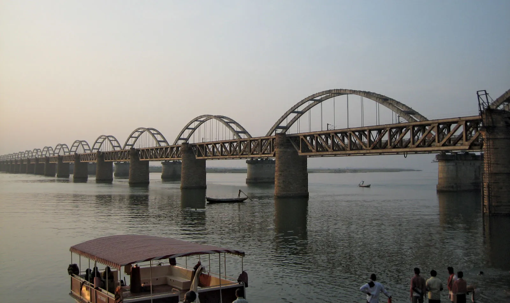
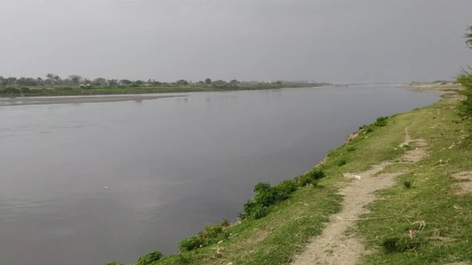
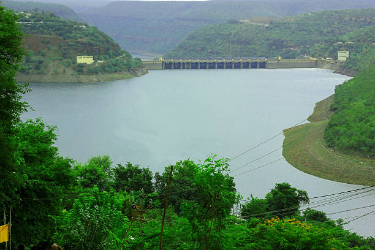
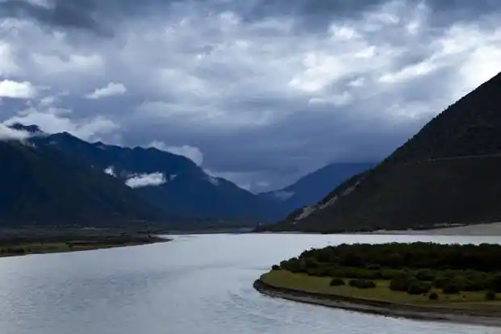
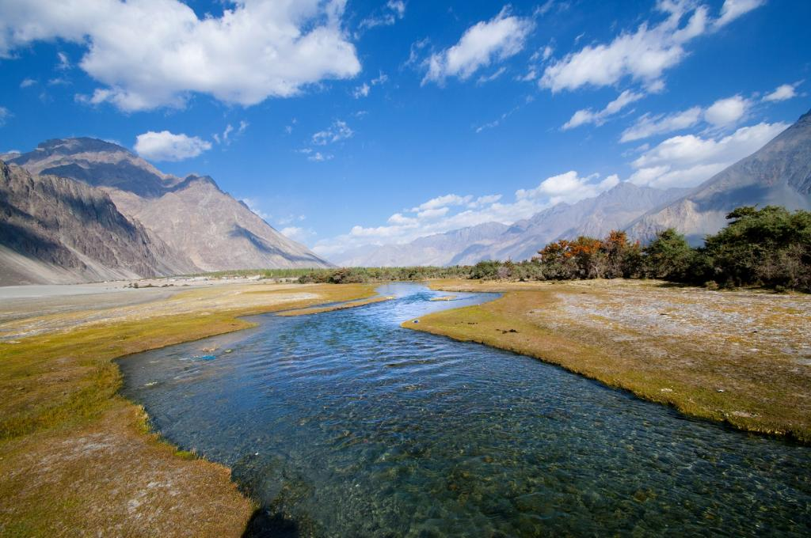
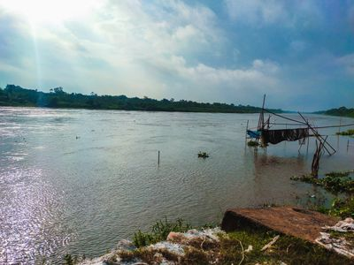
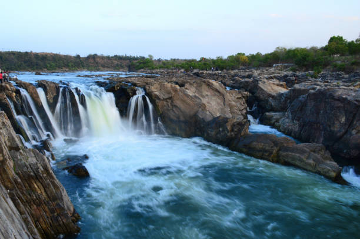
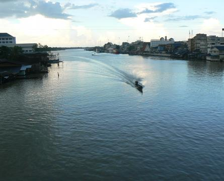

| Pics | River Name... | Ph Value... |
|---|---|---|
| Ganga | 7.1 to 9.6 | |
|  | Godavari | 1.9 to 7.5 |
|  | Yamuna | 7.5 to 11.8 |
|
Kaveri | 6.5 to 8.5 |
|  | Krishna | 6.5 to 8.5 |
|  | Brahmaputra | 7.64 to 8.67 |
|  | Indus | 6.5 to 8.13 |
|  | Mahananda | 6.5 to 8.5 |
|  | Narmada | 7.2 to 7.8 |
|  | Tapi | 7.8 to 9.3 |